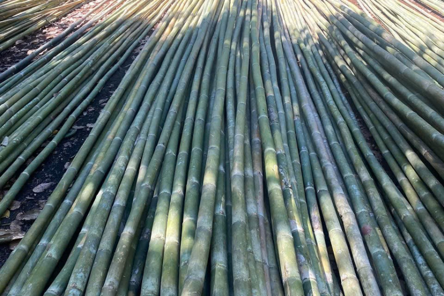
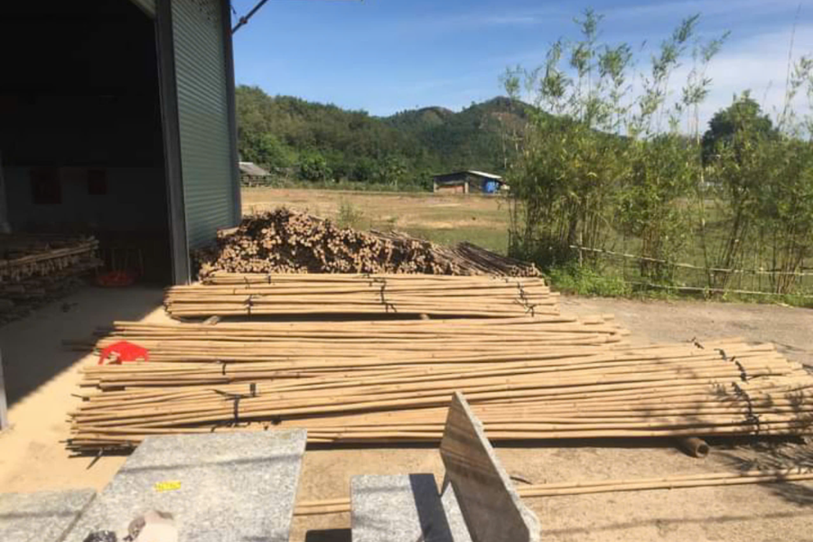
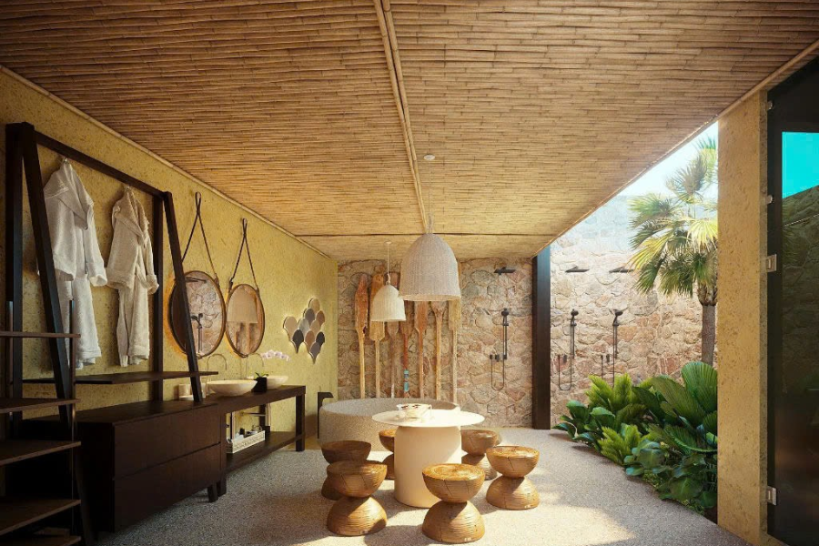

Tre – Loài cây mộc mạc nhưng kiên cường đã gắn bó với người Việt qua biết bao thế hệ. Từ những chiếc đòn gánh, những bức vách nhà tranh cho đến các công trình kiến trúc xanh hiện đại, tre tầm vông không đơn thuần chỉ là vật liệu, mà còn là biểu tượng của sự bền vững, sự gần gũi và đậm đà bản sắc dân tộc.
Thế nhưng, để có thể đưa tre từ miền núi rừng về với đồng bằng, từ tự nhiên vào không gian sống cần đòi hỏi một quy trình xử lý công phu, chuẩn chỉnh. Và đó cũng chính là sứ mệnh mà Tre Việt Building theo đuổi. Chúng tôi mong muốn biến từng cây tre thô mộc trở thành những tác phẩm, những công trình đẹp và bền vững theo thời gian.
Hãy cùng khám phá ngay 7 bước xử lý tre tầm vông hiện đang được ứng dụng tại đơn vị nhé!
7 bước xử lý tre tầm vông tại Tre Việt Building
Bước 1: Cắt khúc
Về cơ bản, mỗi một cây tre tầm vông đều mang trong mình một hình dáng, một độ dài, một tiềm năng riêng nhất định. Và tại Tre Việt Building, những cây tre sau khi được tuyển chọn kỹ lưỡng sẽ được cắt khúc theo kích thước chuẩn, đảm bảo phù hợp với từng mục đích sử dụng. Như là ốp trần, làm cột nhà, làm tường trang trí cho đến thiết kế nội thất sáng tạo.
Cắt và phân loại tre đúng cách sẽ giúp tiết kiệm vật tư, dễ dàng vận chuyển, gia tăng hiệu quả thi công và tạo nền móng vững chắc cho các bước xử lý kế tiếp.
Bước 2: Vận chuyển đến khu xử lý
Tre sau khi cắt sẽ được vận chuyển đến khu xử lý chuyên biệt của Tre Việt Building. Tại đây, tre tầm vông sẽ được bảo quản ở trong điều kiện lý tưởng, tránh tình trạng hư hại, ẩm mốc và sẵn sàng cho quá trình làm thẳng, uốn cong, xử lý chuyên sâu.
Bước 3: Uốn thẳng hoặc uốn cong tre tầm vông

Thực tế thì không phải cây tre nào sinh ra cũng thẳng và không phải công trình nào cũng cần dùng tre thẳng. Đó chính là lý do tại sao đội ngũ Tre Việt Building chúng tôi cực kỳ chú trọng vào công đoạn uốn tre. Đây là một bước mang tính “nghệ thuật”, đòi hỏi sự kết hợp hài hòa giữa nhiệt độ, độ ẩm và thời điểm chính xác. Cụ thể:
- Tre tầm vông sẽ được uốn khi còn tươi hoặc vừa đủ độ mềm.
- Đối với những công trình đòi hỏi cao về kết cấu chịu lực, tre sẽ được hơ nóng, nén và uốn bằng thiết bị chuyên dụng nhằm đảm bảo độ thẳng tuyệt đối và khả năng chịu lực tối ưu.
- Đối với những công trình như spa, quán cà phê, khu nghỉ dưỡng, chúng tôi sẽ thực hiện uốn thủ công để tạo nên những đường cong tự nhiên và hài hòa.
Bước 4: Cố định hình dáng
Sau khi tạo hình, tre sẽ được cố định ngay trên khung hoặc giá đỡ để duy trì form dáng. Đây là bước hết sức quan trọng, nhằm đảm bảo sau khi khô, tre sẽ không bị cong hoặc mất đi hình dáng ban đầu mong muốn.
Tại Tre Việt Building, khung định hình được thiết kế riêng cho từng loại kích thước và kiểu dáng, giúp cho quá trình cố định trở nên hiệu quả, nhất quán.
Bước 5: Xử lý mối mọt và gia cố kết cấu
Ở công đoạn này, tre tầm vông sẽ được “tắm mình” trong các phương pháp truyền thống và hiện đại để trở nên bền bỉ và chắc chắn theo thời gian. Các phương pháp đó bao gồm:
- Hun khói truyền thống: Giúp cho tre tầm vông lên màu đẹp, có hương thơm nhẹ nhàng cùng khả năng kháng côn trùng tự nhiên.
- Ngâm thuốc sinh học: Phương pháp xử lý tre an toàn và thân thiện với môi trường giúp phòng chống mối mọt tận sâu bên trong thân vật liệu.
- Luộc tre: Loại bỏ nhựa và đường – Đây là 2 tác nhân chính gây ra tình trạng nứt nẻ và thu hút côn trùng độc hại.
Tre Việt Building với đội ngũ nhân công lành nghề, giàu chuyên môn, kinh nghiệm sẽ áp dụng linh hoạt từng phương pháp hoặc kết hợp tùy theo yêu cầu thiết kế, môi trường sử dụng. Qua đó đảm bảo tre có độ bền lý tưởng, từ 10 – 15 năm hoặc lâu hơn thế.
Bước 6: Phơi khô

Không gì có thể thay thế được ánh nắng tự nhiên và thời gian. Tre sau khi xử lý xong sẽ được mang đi phơi khô trong điều kiện kiểm soát, nhằm đảm bảo:
- Màu sắc tre đều và đẹp, giữ được chất mộc mạc và tự nhiên.
- Độ ẩm trong cây đạt mức an toàn (<15%)
- Tránh tình trạng co ngót, nứt nẻ khi đưa vào thi công.
Tại Tre Việt Building, quá trình phơi tre được theo dõi một cách sát sao, kỹ lưỡng. Chúng tôi tiến hành xoay cây định kỳ và sắp xếp luân phiên để đảm bảo mọi cây đều đạt được độ khô tối ưu, lý tưởng.
Bước 7: Bảo quản và vận chuyển
Tre sau khi hoàn tất đủ các bước xử lý sẽ được mang đi đóng gói, kê cao và bảo quản kỹ càng tại kho. Khi vận chuyển đến công trình, chúng tôi sẽ tiến hành:
- Kê gỗ hoặc xếp giá đỡ để tre không chạm đất
- Phủ bạt khi có mưa, chống ẩm và tránh nấm mốc
- Hướng dẫn thi công đúng kỹ thuật để đảm bảo tre luôn giữ được vẻ đẹp bền lâu
Tre Việt Building hiểu rằng, mỗi một cây tre là một phần quan trọng trong tổng thể công trình. Và chỉ cần một sai sót nhỏ trong khâu bảo quản thôi cũng có thể làm ảnh hưởng đến chất lượng cuối cùng. Vì thế, chúng tôi luôn đồng hành cùng khách hàng từ khâu chuẩn bị vật tư đến khi lắp đặt hoàn thiện.
Tre Việt Building – Đơn vị thi công tre trúc uy tín, chất lượng hàng đầu Việt Nam

Tre Việt Building tự hào là đơn vị tiên phong trong xử lý, thi công và cung cấp tre tầm vông chất lượng cao. Chúng tôi cam kết tre được xử lý hoàn thiện, đảm bảo độ bền, tính thẩm mỹ và khả năng kháng thời tiết, phù hợp với nhiều công trình kiến trúc hiện đại.
Đặc biệt, Tre Việt Building cung cấp nguồn vật tư tre trúc đạt chuẩn, hỗ trợ thiết kế – thi công trọn gói hoặc theo từng hạng mục. Chúng tôi đáp ứng linh hoạt mọi nhu cầu của khách hàng, từ các cá nhân cho đến các đơn vị kiến trúc chuyên nghiệp.
Thông tin liên hệ:
CÔNG TY TRÁCH NHIỆM HỮU HẠN TRE VIỆT BUILDING
Địa chỉ: 917 Phạm Văn Đồng, Phường Linh Xuân, Thành phố Hồ Chí Minh
Nhà máy sản xuất: Phú Hợp B, Xã Phú Lâm, Đồng Nai.
Điện thoại – Zalo: 093.123.5757
Email: info@treviet.com.vn
Xem thêm: Báo giá thi công ốp trần tre trúc trọn gói tại TPHCM